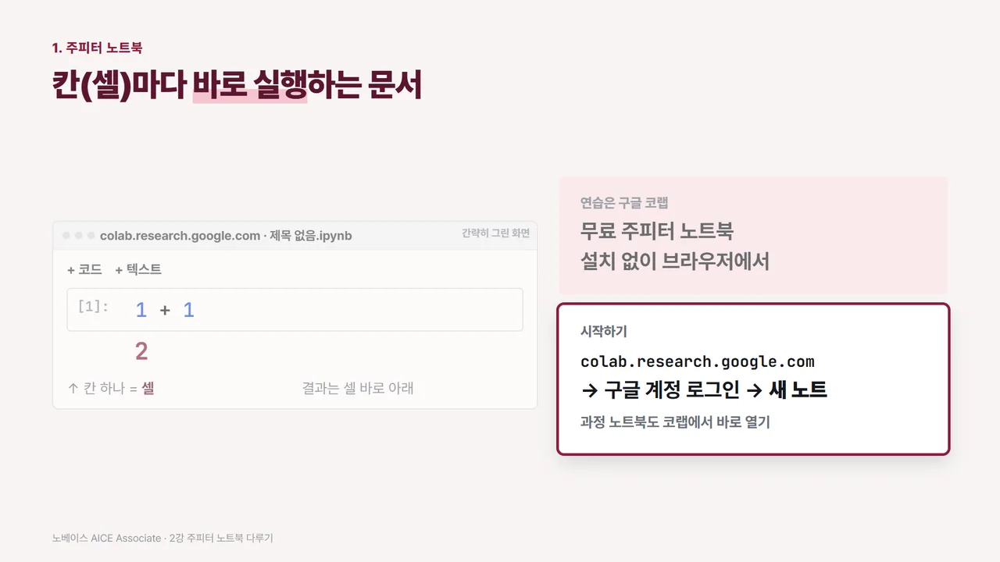
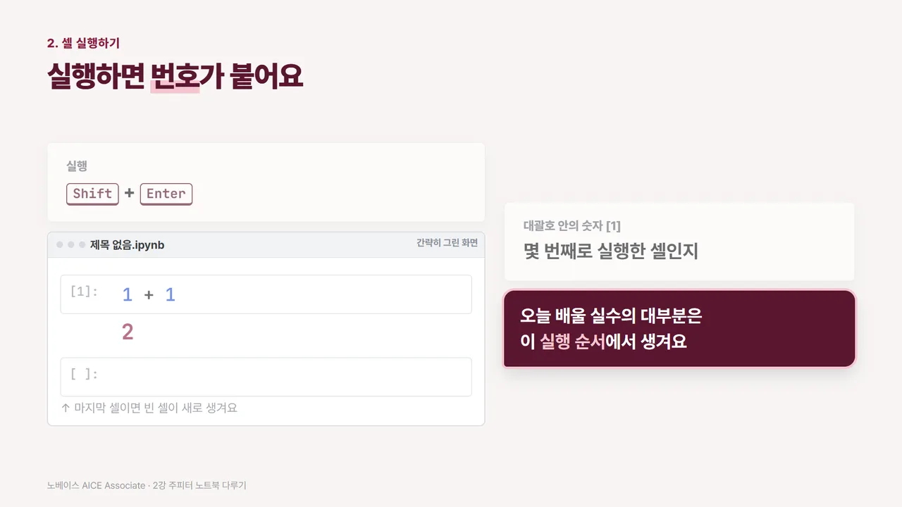
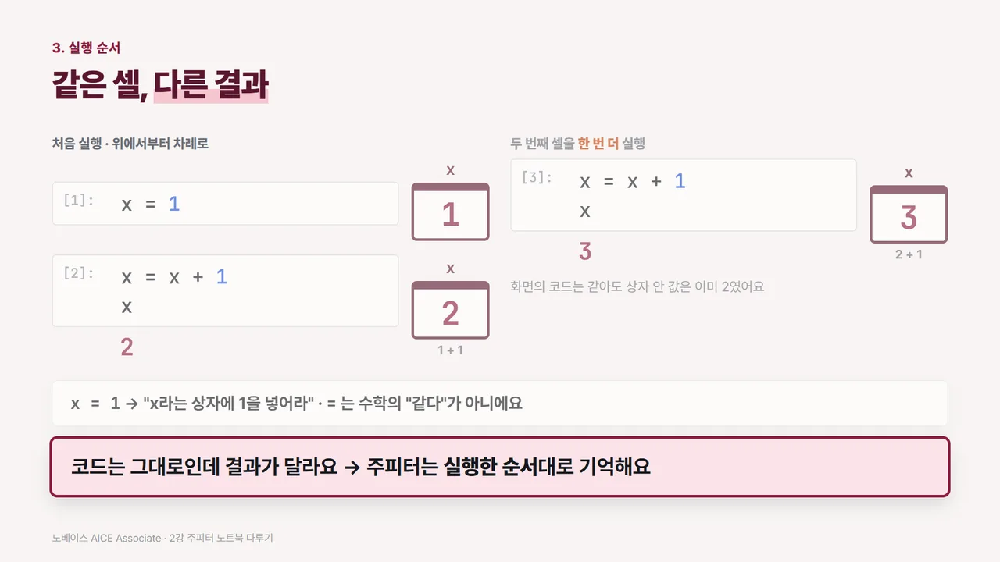
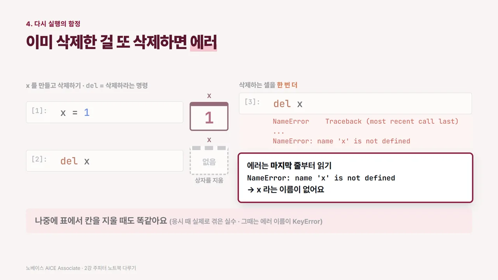
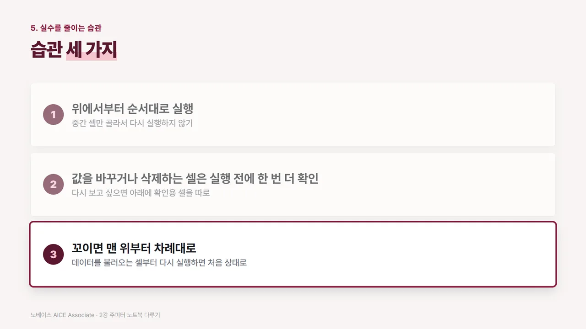
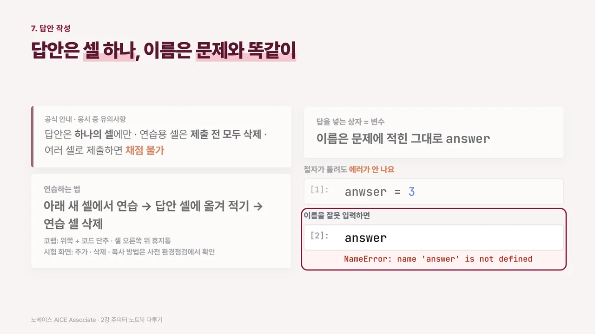

주피터 노트북 다루기
2강 영상에서 배운 내용을 읽기 쉽게 정리했어요. 코드의 결과는 모두 실제로 실행한 값이에요. 인쇄하거나 「PDF로 저장」하면 교재처럼 볼 수 있어요.
01오늘의 핵심
02주피터 노트북과 셀

주피터 노트북은 코드를 여러 칸으로 나눠 작성하고, 각 칸을 실행해 결과를 확인하는 문서예요. 이 칸을 셀이라고 불러요. 셀에 코드를 작성하고 실행하면 결과가 바로 아래에 나타나요.
연습은 구글 코랩으로 해요. 구글에서 무료로 제공하는 주피터 노트북 환경이라 프로그램을 설치하지 않아도 돼요. 주소창에 colab.research.google.com 을 입력하고 구글 계정으로 로그인한 뒤 「새 노트」를 누르면 빈 셀이 보여요.
03셀 실행하기

셀을 한 번 클릭하고 코드를 입력한 뒤 Shift + Enter 를 누르면 셀이 실행되고 결과가 아래에 나타나요. 마지막 셀에서 실행하면 아래에 빈 셀이 새로 만들어져요.
1 + 1
셀 왼쪽 대괄호 안의 숫자는 그 셀이 몇 번째로 실행됐는지 알려 줘요. 오늘 배울 실수 대부분이 이 실행 순서와 관련 있어요.
04같은 셀, 다른 결과

주피터는 위에서 아래로 읽는 문서처럼 보이지만, 실제로는 셀을 실행한 순서대로 결과와 값을 기억해요.
x = 1
x = x + 1 x
x = x + 1 x
05이미 삭제한 걸 또 삭제하면

del 은 삭제하라는 명령이에요.
x = 1
del x
del x
06실수를 줄이는 세 가지 습관

- 첫째, 셀은 위에서부터 순서대로 실행해요. 중간 셀만 골라 실행하는 습관은 피해요.
- 둘째, 값을 바꾸거나 삭제하는 셀은 실행 전에 한 번 더 확인해요. 결과를 다시 보고 싶으면 같은 셀을 반복 실행하지 말고 아래에 확인용 셀을 따로 만들어요.
- 셋째, 값이 꼬였다고 느껴지면 맨 위 셀부터 다시 차례대로 실행해요. 데이터를 불러오는 셀부터 다시 실행하면 처음 불러온 상태로 돌아갈 수 있어요.
07답안은 셀 하나에, 이름은 문제와 똑같이

공식 안내에 따르면 답안은 하나의 셀에만 작성해야 해요. 여러 셀에 나눠 쓰면 채점되지 않아요. 연습은 아래에 새 셀을 만들어 하고, 답이 확인되면 정해진 답안 셀에 옮겨 적은 뒤 연습 셀을 삭제하세요(코랩: 위쪽 「코드 추가」로 셀 만들기, 셀 오른쪽 위 휴지통으로 삭제).
답을 정해진 이름의 상자(변수, 3강에서 자세히 배워요)에 넣으라는 문제도 있어요. 이때는 이름을 문제에 적힌 그대로 써야 해요.
anwser = 3
answer
08스스로 확인하기
- x 에 1을 넣는 셀을 한 번, x 에 1을 더하는 셀을 세 번 실행했어요. 지금 x 는? (정답: 4)
- x 를 삭제하는 셀을 두 번 실행해 NameError 가 났어요. 어떻게 할까요? (정답: x 에 1을 넣는 맨 위 셀부터 다시 차례대로 실행하고, 삭제하는 셀은 한 번만 실행)